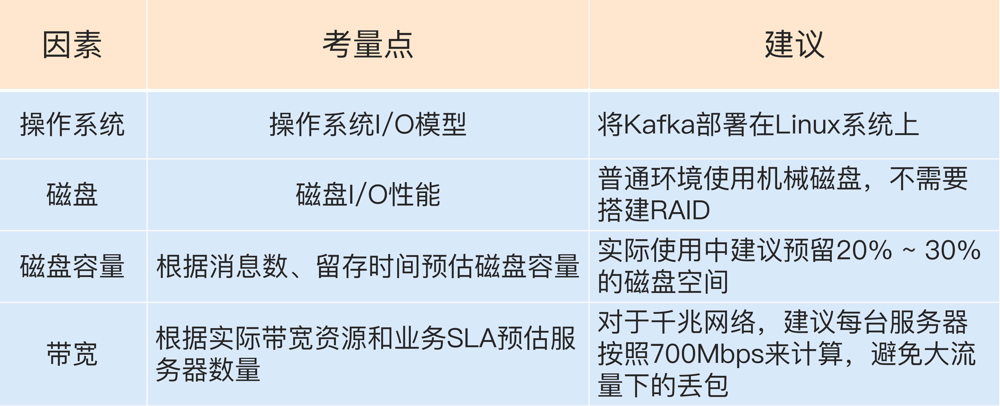

- 00 开篇词 为什么要学习Kafka？.md.html
- 01 消息引擎系统ABC.md.html
- 02 一篇文章带你快速搞定Kafka术语.md.html
- 03 Kafka只是消息引擎系统吗？.md.html
- 04 我应该选择哪种Kafka？.md.html
- 05 聊聊Kafka的版本号.md.html
- 06 Kafka线上集群部署方案怎么做？.md.html
- 07 最最最重要的集群参数配置（上）.md.html
- 08 最最最重要的集群参数配置（下）.md.html
- 09 生产者消息分区机制原理剖析.md.html
- 10 生产者压缩算法面面观.md.html
- 11 无消息丢失配置怎么实现？.md.html
- 12 客户端都有哪些不常见但是很高级的功能？.md.html
- 13 Java生产者是如何管理TCP连接的？.md.html
- 14 幂等生产者和事务生产者是一回事吗？.md.html
- 15 消费者组到底是什么？.md.html
- 16 揭开神秘的“位移主题”面纱.md.html
- 17 消费者组重平衡能避免吗？.md.html
- 18 Kafka中位移提交那些事儿.md.html
- 19 CommitFailedException异常怎么处理？.md.html
- 20 多线程开发消费者实例.md.html
- 21 Java 消费者是如何管理TCP连接的_.md.html
- 22 消费者组消费进度监控都怎么实现？.md.html
- 23 Kafka副本机制详解.md.html
- 24 请求是怎么被处理的？.md.html
- 25 消费者组重平衡全流程解析.md.html
- 26 你一定不能错过的Kafka控制器.md.html
- 27 关于高水位和Leader Epoch的讨论.md.html
- 28 主题管理知多少_.md.html
- 29 Kafka动态配置了解下？.md.html
- 30 怎么重设消费者组位移？.md.html
- 31 常见工具脚本大汇总.md.html
- 32 KafkaAdminClient：Kafka的运维利器.md.html
- 33 Kafka认证机制用哪家？.md.html
- 34 云环境下的授权该怎么做？.md.html
- 35 跨集群备份解决方案MirrorMaker.md.html
- 36 你应该怎么监控Kafka？.md.html
- 37 主流的Kafka监控框架.md.html
- 38 调优Kafka，你做到了吗？.md.html
- 39 从0搭建基于Kafka的企业级实时日志流处理平台.md.html
- 40 Kafka Streams与其他流处理平台的差异在哪里？.md.html
- 41 Kafka Streams DSL开发实例.md.html
- 42 Kafka Streams在金融领域的应用.md.html
- 加餐 搭建开发环境、阅读源码方法、经典学习资料大揭秘.md.html
- 用户故事 黄云：行百里者半九十.md.html
- 结束语 以梦为马，莫负韶华！.md.html
- 捐赠
06 Kafka线上集群部署方案怎么做？
专栏前面几期内容，我分别从Kafka的定位、版本的变迁以及功能的演进等几个方面循序渐进地梳理了Apache Kafka的发展脉络。通过这些内容，我希望你能清晰地了解Kafka是用来做什么的，以及在实际生产环境中该如何选择Kafka版本，更快地帮助你入门Kafka。
现在我们就来看看在生产环境中的Kafka集群方案该怎么做。既然是集群，那必然就要有多个Kafka节点机器，因为只有单台机器构成的Kafka伪集群只能用于日常测试之用，根本无法满足实际的线上生产需求。而真正的线上环境需要仔细地考量各种因素，结合自身的业务需求而制定。下面我就分别从操作系统、磁盘、磁盘容量和带宽等方面来讨论一下。
操作系统
首先我们先看看要把Kafka安装到什么操作系统上。说起操作系统，可能你会问Kafka不是JVM系的大数据框架吗？Java又是跨平台的语言，把Kafka安装到不同的操作系统上会有什么区别吗？其实区别相当大！
的确，如你所知，Kafka由Scala语言和Java语言编写而成，编译之后的源代码就是普通的“.class”文件。本来部署到哪个操作系统应该都是一样的，但是不同操作系统的差异还是给Kafka集群带来了相当大的影响。目前常见的操作系统有3种：Linux、Windows和macOS。应该说部署在Linux上的生产环境是最多的，也有一些Kafka集群部署在Windows服务器上。Mac虽然也有macOS Server，但是我怀疑是否有人（特别是国内用户）真的把生产环境部署在Mac服务器上。
如果考虑操作系统与Kafka的适配性，Linux系统显然要比其他两个特别是Windows系统更加适合部署Kafka。虽然这个结论可能你不感到意外，但其中具体的原因你也一定要了解。主要是在下面这三个方面上，Linux的表现更胜一筹。
- I/O模型的使用
- 数据网络传输效率
- 社区支持度
我分别来解释一下，首先来看I/O模型。什么是I/O模型呢？你可以近似地认为I/O模型就是操作系统执行I/O指令的方法。
主流的I/O模型通常有5种类型：阻塞式I/O、非阻塞式I/O、I/O多路复用、信号驱动I/O和异步I/O。每种I/O模型都有各自典型的使用场景，比如Java中Socket对象的阻塞模式和非阻塞模式就对应于前两种模型；而Linux中的系统调用select函数就属于I/O多路复用模型；大名鼎鼎的epoll系统调用则介于第三种和第四种模型之间；至于第五种模型，其实很少有Linux系统支持，反而是Windows系统提供了一个叫IOCP线程模型属于这一种。
你不必详细了解每一种模型的实现细节，通常情况下我们认为后一种模型会比前一种模型要高级，比如epoll就比select要好，了解到这一程度应该足以应付我们下面的内容了。
说了这么多，I/O模型与Kafka的关系又是什么呢？实际上Kafka客户端底层使用了Java的selector，selector在Linux上的实现机制是epoll，而在Windows平台上的实现机制是select。因此在这一点上将Kafka部署在Linux上是有优势的，因为能够获得更高效的I/O性能。
其次是网络传输效率的差别。你知道的，Kafka生产和消费的消息都是通过网络传输的，而消息保存在哪里呢？肯定是磁盘。故Kafka需要在磁盘和网络间进行大量数据传输。如果你熟悉Linux，你肯定听过零拷贝（Zero Copy）技术，就是当数据在磁盘和网络进行传输时避免昂贵的内核态数据拷贝从而实现快速的数据传输。Linux平台实现了这样的零拷贝机制，但有些令人遗憾的是在Windows平台上必须要等到Java 8的60更新版本才能“享受”到这个福利。一句话总结一下，在Linux部署Kafka能够享受到零拷贝技术所带来的快速数据传输特性。
最后是社区的支持度。这一点虽然不是什么明显的差别，但如果不了解的话可能比前两个因素对你的影响更大。简单来说就是，社区目前对Windows平台上发现的Kafka Bug不做任何承诺。虽然口头上依然保证尽力去解决，但根据我的经验，Windows上的Bug一般是不会修复的。因此，Windows平台上部署Kafka只适合于个人测试或用于功能验证，千万不要应用于生产环境。
磁盘
如果问哪种资源对Kafka性能最重要，磁盘无疑是要排名靠前的。在对Kafka集群进行磁盘规划时经常面对的问题是，我应该选择普通的机械磁盘还是固态硬盘？前者成本低且容量大，但易损坏；后者性能优势大，不过单价高。我给出的建议是使用普通机械硬盘即可。
Kafka大量使用磁盘不假，可它使用的方式多是顺序读写操作，一定程度上规避了机械磁盘最大的劣势，即随机读写操作慢。从这一点上来说，使用SSD似乎并没有太大的性能优势，毕竟从性价比上来说，机械磁盘物美价廉，而它因易损坏而造成的可靠性差等缺陷，又由Kafka在软件层面提供机制来保证，故使用普通机械磁盘是很划算的。
关于磁盘选择另一个经常讨论的话题就是到底是否应该使用磁盘阵列（RAID）。使用RAID的两个主要优势在于：
- 提供冗余的磁盘存储空间
- 提供负载均衡
以上两个优势对于任何一个分布式系统都很有吸引力。不过就Kafka而言，一方面Kafka自己实现了冗余机制来提供高可靠性；另一方面通过分区的概念，Kafka也能在软件层面自行实现负载均衡。如此说来RAID的优势就没有那么明显了。当然，我并不是说RAID不好，实际上依然有很多大厂确实是把Kafka底层的存储交由RAID的，只是目前Kafka在存储这方面提供了越来越便捷的高可靠性方案，因此在线上环境使用RAID似乎变得不是那么重要了。综合以上的考量，我给出的建议是：
- 追求性价比的公司可以不搭建RAID，使用普通磁盘组成存储空间即可。
- 使用机械磁盘完全能够胜任Kafka线上环境。
磁盘容量
Kafka集群到底需要多大的存储空间？这是一个非常经典的规划问题。Kafka需要将消息保存在底层的磁盘上，这些消息默认会被保存一段时间然后自动被删除。虽然这段时间是可以配置的，但你应该如何结合自身业务场景和存储需求来规划Kafka集群的存储容量呢？
我举一个简单的例子来说明该如何思考这个问题。假设你所在公司有个业务每天需要向Kafka集群发送1亿条消息，每条消息保存两份以防止数据丢失，另外消息默认保存两周时间。现在假设消息的平均大小是1KB，那么你能说出你的Kafka集群需要为这个业务预留多少磁盘空间吗？
我们来计算一下：每天1亿条1KB大小的消息，保存两份且留存两周的时间，那么总的空间大小就等于1亿 * 1KB * 2 / 1000 / 1000 = 200GB。一般情况下Kafka集群除了消息数据还有其他类型的数据，比如索引数据等，故我们再为这些数据预留出10%的磁盘空间，因此总的存储容量就是220GB。既然要保存两周，那么整体容量即为220GB * 14，大约3TB左右。Kafka支持数据的压缩，假设压缩比是0.75，那么最后你需要规划的存储空间就是0.75 * 3 = 2.25TB。
总之在规划磁盘容量时你需要考虑下面这几个元素：
- 新增消息数
- 消息留存时间
- 平均消息大小
- 备份数
- 是否启用压缩
带宽
对于Kafka这种通过网络大量进行数据传输的框架而言，带宽特别容易成为瓶颈。事实上，在我接触的真实案例当中，带宽资源不足导致Kafka出现性能问题的比例至少占60%以上。如果你的环境中还涉及跨机房传输，那么情况可能就更糟了。
如果你不是超级土豪的话，我会认为你和我平时使用的都是普通的以太网络，带宽也主要有两种：1Gbps的千兆网络和10Gbps的万兆网络，特别是千兆网络应该是一般公司网络的标准配置了。下面我就以千兆网络举一个实际的例子，来说明一下如何进行带宽资源的规划。
与其说是带宽资源的规划，其实真正要规划的是所需的Kafka服务器的数量。假设你公司的机房环境是千兆网络，即1Gbps，现在你有个业务，其业务目标或SLA是在1小时内处理1TB的业务数据。那么问题来了，你到底需要多少台Kafka服务器来完成这个业务呢？
让我们来计算一下，由于带宽是1Gbps，即每秒处理1Gb的数据，假设每台Kafka服务器都是安装在专属的机器上，也就是说每台Kafka机器上没有混部其他服务，毕竟真实环境中不建议这么做。通常情况下你只能假设Kafka会用到70%的带宽资源，因为总要为其他应用或进程留一些资源。
根据实际使用经验，超过70%的阈值就有网络丢包的可能性了，故70%的设定是一个比较合理的值，也就是说单台Kafka服务器最多也就能使用大约700Mb的带宽资源。
稍等，这只是它能使用的最大带宽资源，你不能让Kafka服务器常规性使用这么多资源，故通常要再额外预留出2/3的资源，即单台服务器使用带宽700Mb / 3 ≈ 240Mbps。需要提示的是，这里的2/3其实是相当保守的，你可以结合你自己机器的使用情况酌情减少此值。
好了，有了240Mbps，我们就可以计算1小时内处理1TB数据所需的服务器数量了。根据这个目标，我们每秒需要处理2336Mb的数据，除以240，约等于10台服务器。如果消息还需要额外复制两份，那么总的服务器台数还要乘以3，即30台。
怎么样，还是很简单的吧。用这种方法评估线上环境的服务器台数是比较合理的，而且这个方法能够随着你业务需求的变化而动态调整。
小结
所谓“兵马未动，粮草先行”。与其盲目上马一套Kafka环境然后事后费力调整，不如在一开始就思考好实际场景下业务所需的集群环境。在考量部署方案时需要通盘考虑，不能仅从单个维度上进行评估。相信今天我们聊完之后，你对如何规划Kafka生产环境一定有了一个清晰的认识。现在我来总结一下今天的重点：

开放讨论
对于今天我所讲的这套评估方法，你有什么问题吗？你还能想出什么改进的方法吗？
欢迎你写下自己的思考或疑问，我们一起讨论 。如果你觉得有所收获，也欢迎把文章分享给你的朋友。
© 2019 - 2023 Liangliang Lee. Powered by gin and hexo-theme-book.